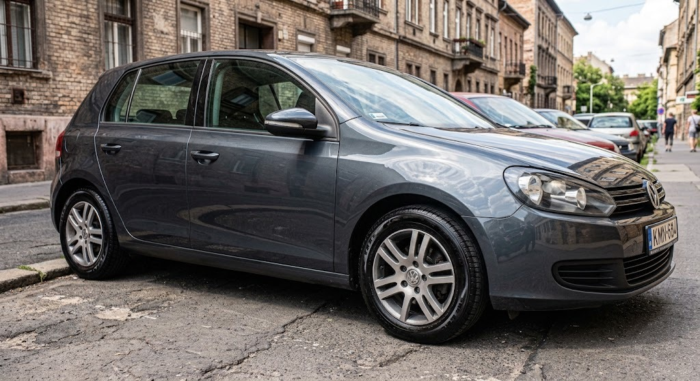
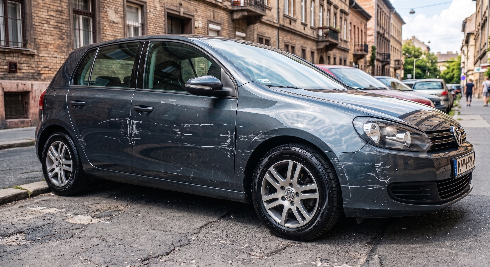

Többlépcsős Polírozás
Karcok, hologramok és mattulás teljes körű eltávolítása a gyári fényerő visszaállításáért.
High-End járműápolás, kerámia bevonatok és mikrokarcmentes polírozás.
Húzza el a csúszkát a mikrokarcok eltávolítása előtti és utáni állapot megtekintéséhez.


Karcok, hologramok és mattulás teljes körű eltávolítása a gyári fényerő visszaállításáért.
9H keménységű, vízlepergető nanotechnológiás védelem, akár 5 év tartóssággal.
Kétvödrös, ecsetes mikrotisztítás aktív habbal, pH-semleges prémium anyagokkal.
Bőrápolás, ózonos fertőtlenítés és kárpittisztítás a maximális higiénia érdekében.
Kérjük, kattintson a megfelelő mesterünkre az egyedi árlista megtekintéséhez.
Vezető Polírozó
Belső Tér Specialista
Kerámia Szakértő